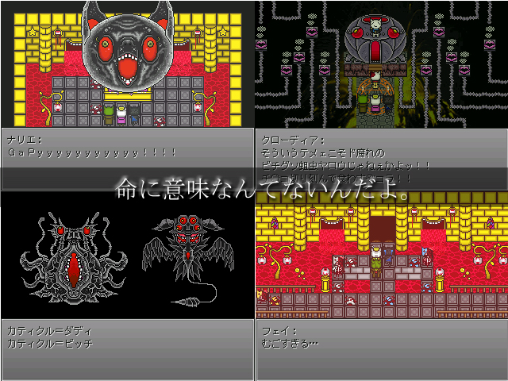

作品紹介
| ≪ Back | トップページ | 作品一覧 | Next ≫ |
| No065. - すでに私たちは地獄のまっただ中でした。 |

| 使用ツール：ＲＰＧツクール2000 |
| 作者：ローゼンクロイツ◆Mvhdw.2dlc |
| ジャンル：クソとゲロと愛に満ちた魂のRPG |
| 動画・配信：許可します。 |
|
こんにちは、はじめまして、ローゼンクロイツと申します。 ところで、皆様は自分の生きてる意味を400字以内で説明せよと 言われたら説明できますか？私はできません。 なぜなら、生きることに意味などないからです。 肉のズタ袋の中で魂が躍動し、かろうじて命らしきものが営まれている様子こそ ニンゲンの在り様であり、ただそういうものがそこに在るだけなのです。 なので、私の命にも皆様の命にも意味なんてありません。 意味なんてありません。意味なんてありません。意味なんてありません。 意味なんてありません。意味なんてありません。意味なんてありません。 だから、自分で決めるのです。 |
| 管理人コメント：存在と意味とを切り離すことはできない。私は意味そのものだ。 ―――ガイアの言葉 |
| ダウンロード(36.7MB) / 感想掲示板 ツイート |
更新情報・お知らせ
- 2011/12/17
- 提出
- 2011/12/12
- エントリー